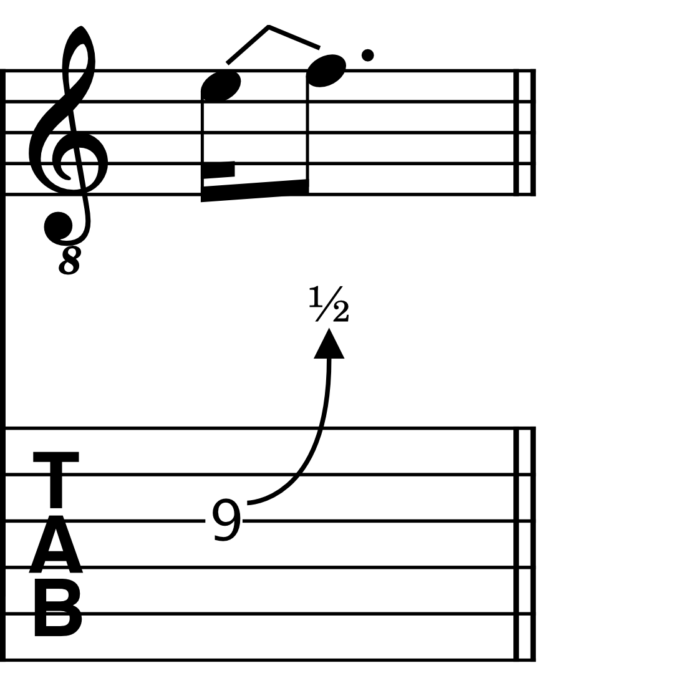
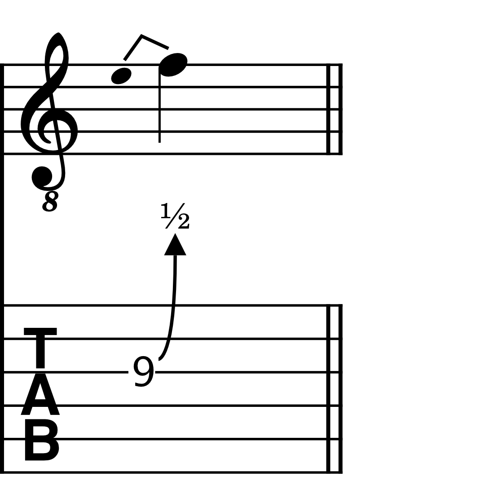
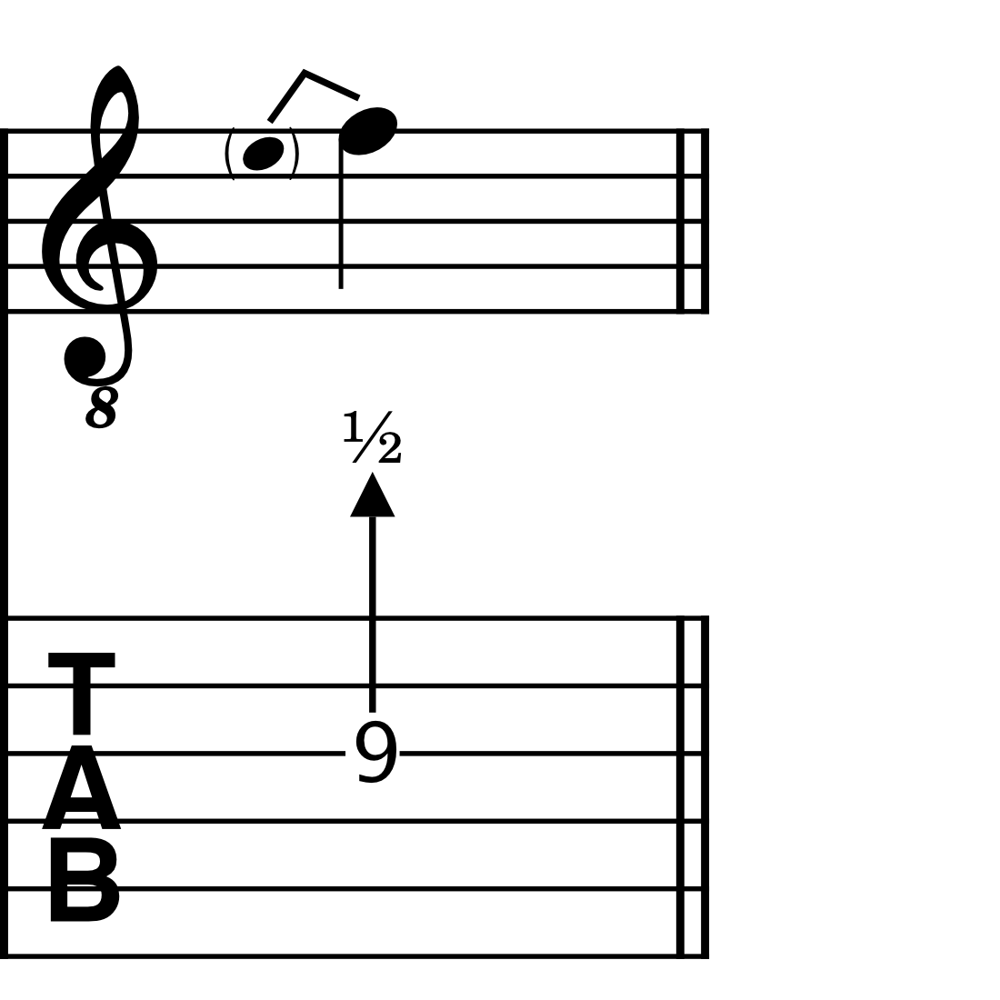
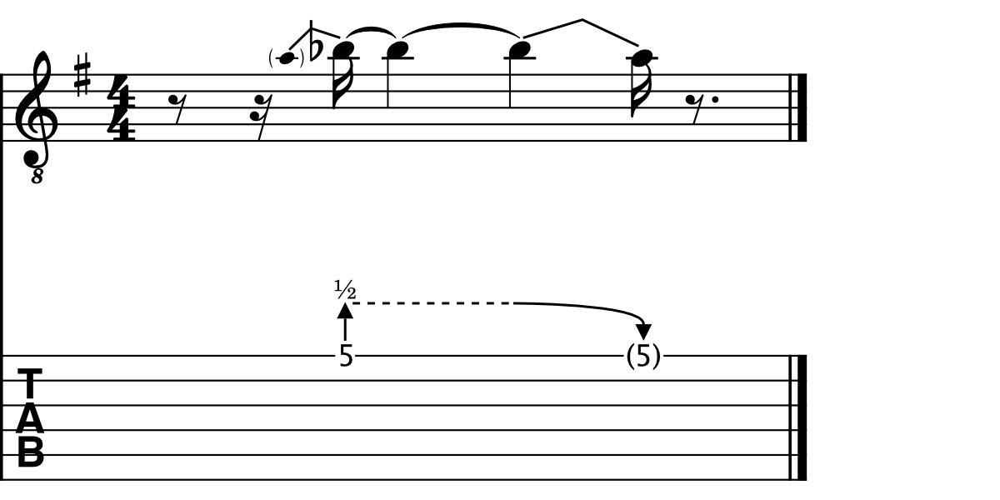

吉他推弦与下压
本页介绍专门用于吉他演奏的音高推弦和下压。对于其他类型的推弦，见铜管或木管乐器推弦。
关于推弦与下压
推弦线和下压线可用于表示向下或向上的音高推弦。
推弦是通过用手指按住指板上的琴弦，将琴弦向上或向下拉动而产生的。
下压是通过按压或拉起连接在吉他琴桥上的摇把/颤音杆而产生的。
推弦会改变单个音符及和弦的音高，而下压会均匀地改变所有琴弦的音高。
以下类型的推弦和下压可以添加到你的乐谱中：
| 推弦 | 下压 |
|---|---|
| 标准推弦 | 标准下压 |
| 预推弦 | 预下压 |
| 倚音推弦 | 下潜 |
| 轻微推弦 | 起音 |
所有这些元素都可以在 吉他面板 中找到。
它们在 MuseScore Studio 中的工作原理
在大多数情况下，MuseScore 中的推弦和下压连接两个音符：“起始音符”和“到达音符”。
推弦和下压是上下文相关的，意味着如果到达音符高于起始音符，就会创建向上的推弦/下压。相反，如果到达音符低于起始音符，就会绘制释放或向下的下压。
每当推弦/下压添加到吉他谱谱表时，起始音符和到达音符都会以品位位置输入。然而，到达音符默认隐藏。这让你可以仅使用吉他谱谱表创建多个推弦或下压的序列，包括推弦-释放-推弦组合，而无需在标准谱表中输入音符。如果你主要在标准谱表中工作，你可能会发现通过属性面板中的 不可见 设置隐藏这些品位位置更方便。
在所有情况下，推弦/下压幅度，即起始音符与到达音符之间的音程距离，由标准谱表上的记谱音高反映。这让你可以看到旋律线的形状，包括推弦产生的音高。它还可以让旋律线的节奏（包括任何推弦和下压的节拍时值）清晰地传达给演奏者。
在吉他谱谱表上，推弦/下压幅度由数字指示器给出：“1”表示全音，“1/2”表示半音，“1/4”表示四分之一音，等等。
添加推弦和下压
你可以通过以下任何方式将所有类型的推弦和下压应用到你的乐谱：
- 选中一个或多个音符，并单击 吉他 面板中所需的推弦/下压符号
- 将所需的推弦/下压符号从 吉他 面板拖到一个音符或和弦上
- 选中一个或多个音符，并输入所需的键盘快捷键（详见下文）
推弦和下压可以添加到单个音符和和弦上。在添加所需的推弦或下压元素之前，只需选中所有你想应用音高推弦的音符即可。在吉他谱谱表上，相同音程值的和弦音符之间的推弦线会自动合并为一个音程数字，而对于连接多个和弦的下压线，只会绘制一条线。





一个由三个音符组成的和弦在弹奏前用摇把/颤音杆向下压了一个全音。和弦弹奏后，摇把/颤音杆回到静止位置。


保持
每当包含推弦或下压的音符或和弦随后通过延音线连接到一个或多个音符时，保持线就会自动绘制。
保持由虚线水平线表示。它只显示在吉他谱谱表中。

一条连接预推弦和释放的保持线

一条显示摇把/颤音杆在一个半拍内保持位置的保持线
此外，你可以在有意义的地方手动显示或隐藏保持线。
- 选中乐谱中的推弦或下压
- 打开属性面板
- 在 保持线 下，选择 显示 或 隐藏，分别强制绘制或隐藏保持线
修改推弦和下压
推弦的音程幅度和播放速度都可以在 MuseScore 中调整，方法是在标准谱表上修改推弦音符的音高，或在 属性 面板中调整推弦/下压曲线。
在标准谱表上修改推弦和下压
要在标准谱表上更改推弦或下压的推弦幅度，只需升高或降低乐谱中起始音符或到达音符的音高。任何关联吉他谱谱表中的分数指示器都会自动调整。
轻微推弦、下潜和起音只能通过 属性 面板调整其播放时值和音程值。
在属性面板中修改推弦和下压
音高推弦幅度及其播放速度都可以通过 属性 面板调整。
要调整推弦幅度：
- 使用上文概述的任何方法将推弦应用到你的乐谱
- 选中推弦
- 打开属性面板
- 在 自定义推弦/下压 图中，单击并向上或向下拖动曲线的端点
推弦/下压曲线也可以仅使用计算机键盘修改，无需使用鼠标。
- 导航到乐谱中的推弦或下压（见导航乐谱）
- 按 esc
- 使用 tab 导航到 属性 面板
- 按 tab 直到到达 推弦/下压 部分
- 按 down 方向键直到到达自定义推弦/下压部分
- 按 spacebar（空格键）选中曲线的起始位置点
- 按住 alt（macOS 上为 Option），同时使用 left 和 right 方向键在曲线上的点之间切换
- 使用 up 和 down 方向键修改所选点的音高
推弦/下压曲线最左边的点对应起始音符。最右边的点对应到达音符。
向上拖动曲线最右端（端点）会以 ¼ 音步进升高到达音符。同样，向下拖动端点会降低到达音符的音高。吉他谱谱表中的分数指示器以及标准谱表中的记谱音高都会相应更新。
要调整推弦/下压的播放速度：
- 选中乐谱中的推弦/下压
- 打开属性面板
- 在 自定义推弦/下压 图中，单击并向左或向右拖动曲线的起点和终点

水平拖动曲线点只会更改其播放速度，包括起始音符和到达音符保持的时长（以水平线表示）。它不会影响乐谱中的节奏记谱。
特殊情况
显示松弛的琴弦
松弛 线表示颤音/摇把被压到琴弦松弛、不再产生可辨音高的程度。
要创建 松弛 线：
- 选中乐谱中的标准下压
- 前往 属性
- 单击并拖动 自定义下压 曲线的端点一直到底部
创建同度推弦
要创建同度推弦：
- 创建一个包含两个同度音符的和弦（使用 Windows 上的 alt+1，或 macOS 上的 option+1，向现有音符添加一个同度音程）
- 选中你想应用推弦的音符
- 添加所需的推弦（见上文步骤）

对于同度推弦，在吉他谱谱表中应用推弦会很有帮助，因为在吉他谱中更容易看出具体推的是哪根琴弦。
自定义推弦与下压的样式
要自定义整个乐谱中推弦和下压的外观：
- 前往菜单栏中的 格式
- 选择 样式...
- 在出现的对话框中，从左侧类别列表中选择 推弦与下压
以下选项可用：